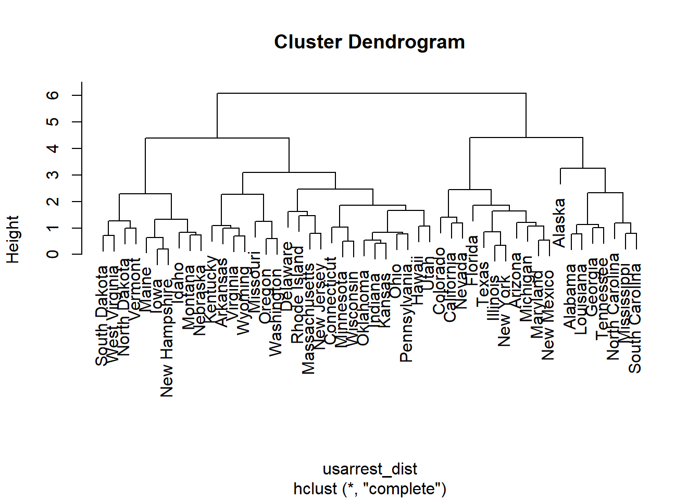
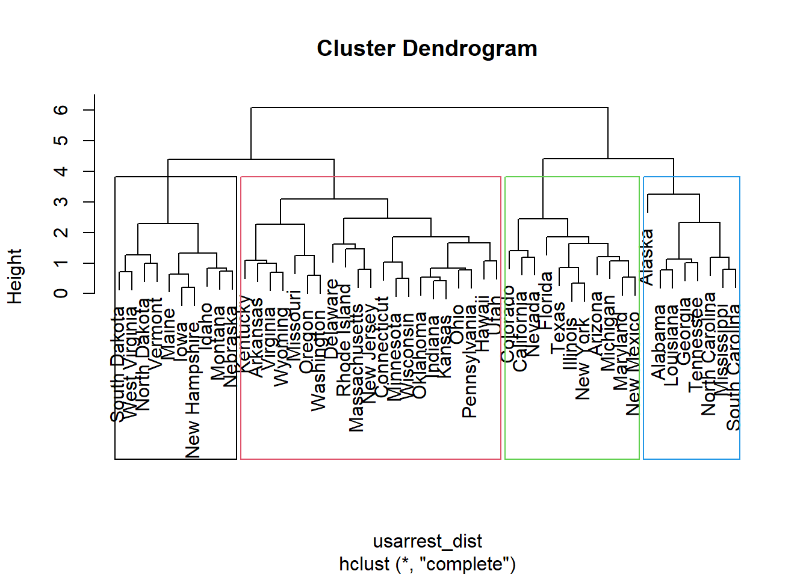
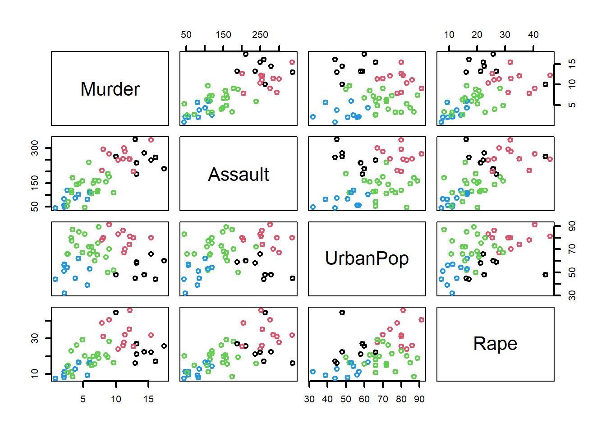

head(USArrests)## Murder Assault UrbanPop Rape
## Alabama 13.2 236 58 21.2
## Alaska 10.0 263 48 44.5
## Arizona 8.1 294 80 31.0
## Arkansas 8.8 190 50 19.5
## California 9.0 276 91 40.6
## Colorado 7.9 204 78 38.7Actividad: hacer un dotchart para poner los tipos de crimen:
summary(USArrests)## Murder Assault UrbanPop Rape
## Min. : 0.800 Min. : 45.0 Min. :32.00 Min. : 7.30
## 1st Qu.: 4.075 1st Qu.:109.0 1st Qu.:54.50 1st Qu.:15.07
## Median : 7.250 Median :159.0 Median :66.00 Median :20.10
## Mean : 7.788 Mean :170.8 Mean :65.54 Mean :21.23
## 3rd Qu.:11.250 3rd Qu.:249.0 3rd Qu.:77.75 3rd Qu.:26.18
## Max. :17.400 Max. :337.0 Max. :91.00 Max. :46.00Paso 1: escalar los datos
usarrest_sc <- scale(USArrests)Paso 2: calcular la matriz de distancias
usarrest_dist <- dist(usarrest_sc)Paso 3: agrupamiento jerárquico
usarrest_hc <- hclust(usarrest_dist) # Por defecto se usa complete linkageVeamos el dendograma:
plot(usarrest_hc)
grupos_complete <- cutree(usarrest_hc,k=4)plot(usarrest_hc)
rect.hclust(usarrest_hc,k=4,border=1:4)
¿Cuántos estados conforman cada grupo?
table(grupos_complete)## grupos_complete
## 1 2 3 4
## 8 11 21 10datos <- USArrests
datos$grupo <- grupos_completepairs(datos[,1:4],col=datos$grupo,lwd=2)
aggregate(datos$Murder~datos$grupo,FUN=mean)## datos$grupo datos$Murder
## 1 1 14.087500
## 2 2 11.054545
## 3 3 5.871429
## 4 4 3.180000Medias:
aggregate(cbind(UrbanPop,Murder,Rape,Assault)~grupo,data=datos,FUN=mean)## grupo UrbanPop Murder Rape Assault
## 1 1 53.50000 14.087500 24.53750 252.7500
## 2 2 79.09091 11.054545 32.61818 264.0909
## 3 3 70.76190 5.871429 18.58095 134.4762
## 4 4 49.30000 3.180000 11.63000 78.7000grupos_hclust_lb <- ifelse(grupos_complete==1,"rural_violento",
ifelse(grupos_complete==2,"urbano_violento",
ifelse(grupos_complete==3,"urbano_pacifico","rural_pacifico")))Dispersión:
aggregate(cbind(UrbanPop,Murder,Rape,Assault)~grupo,data=datos,FUN=sd)## grupo UrbanPop Murder Rape Assault
## 1 1 8.211490 2.277491 8.887702 44.97857
## 2 2 6.833075 2.179616 6.928033 39.92607
## 3 3 10.444639 2.182004 5.406535 45.77622
## 4 4 9.165758 1.706068 3.301868 26.47452usarrest_kmeans <- kmeans(usarrest_sc,2)
usarrest_kmeans$centers## Murder Assault UrbanPop Rape
## 1 1.004934 1.0138274 0.1975853 0.8469650
## 2 -0.669956 -0.6758849 -0.1317235 -0.5646433usarrest_kmeans <- kmeans(usarrest_sc,4,nstart=5)
usarrest_kmeans$centers## Murder Assault UrbanPop Rape
## 1 0.6950701 1.0394414 0.7226370 1.27693964
## 2 -0.9615407 -1.1066010 -0.9301069 -0.96676331
## 3 -0.4894375 -0.3826001 0.5758298 -0.26165379
## 4 1.4118898 0.8743346 -0.8145211 0.01927104aggregate(cbind(UrbanPop,Murder,Rape,Assault)~usarrest_kmeans$cluster,data=USArrests,FUN=mean)## usarrest_kmeans$cluster UrbanPop Murder Rape Assault
## 1 1 76.00000 10.81538 33.19231 257.38462
## 2 2 52.07692 3.60000 12.17692 78.53846
## 3 3 73.87500 5.65625 18.78125 138.87500
## 4 4 53.75000 13.93750 21.41250 243.62500grupos_kmeans_lb <- ifelse(usarrest_kmeans$cluster==1,"rural_pacifico",
ifelse(usarrest_kmeans$cluster==2,"rural_violento",
ifelse(usarrest_kmeans$cluster==3,"urbano_pacifico","urbano_violento")))aggregate(cbind(UrbanPop,Murder,Rape,Assault)~grupos_kmeans_lb,data=USArrests,FUN=mean)## grupos_kmeans_lb UrbanPop Murder Rape Assault
## 1 rural_pacifico 76.00000 10.81538 33.19231 257.38462
## 2 rural_violento 52.07692 3.60000 12.17692 78.53846
## 3 urbano_pacifico 73.87500 5.65625 18.78125 138.87500
## 4 urbano_violento 53.75000 13.93750 21.41250 243.62500table(grupos_kmeans_lb,grupos_hclust_lb)## grupos_hclust_lb
## grupos_kmeans_lb rural_pacifico rural_violento urbano_pacifico urbano_violento
## rural_pacifico 0 1 1 11
## rural_violento 10 0 3 0
## urbano_pacifico 0 0 16 0
## urbano_violento 0 7 1 0